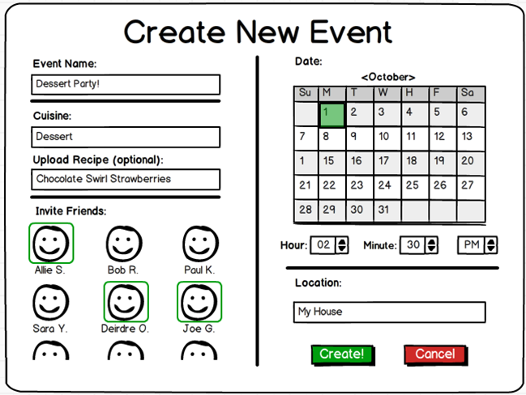

Fallera - Social Cooking
Human Factors Interface Design, Fall 2012

The goal of this phase was to use our observations from the first phase to create designs and paper prototypes of one idea. We chose to implement a design which merged aspects of several of the sketches we created at the end of the first phase. We created paper prototypes of our design using MyBalsamiq. We then conducted a series of usability tests in which we determined how users interact with our design and what aspects need revision. We revised our design as we received feedback from users so that we could test refinements with users. We received a large amount of feedback from the users, most of which we have incorporated already into our revised design.
The design we are pursuing is very similar to our original plan, with a variety of changes to the interface in order to improve the intuitiveness of the design and the workflow of using the app. We will continue to incorporate the feedback we received as we progress into the next phase.
For Idea Development, we first looked at our design ideas, considering which ones most-helped our primary persona. We decided on a design that helped our user plan and keep track of upcoming events.
We also were interested in including a social aspect of the app, which was inspired by Abby's large network of friends and her need to keep track of them. Within her network of friends are groups of friends. For example, Abby has friends from Church, her Political Science Study group, and her friends from the ESL program she volunteers at. Abby sees cooking and baking as a great way to take a break from schoolwork, and does so often. Sometimes she does not make time for all of them, so having a way to keep track of what groups of friends she has made commitments to cook with, she can feel comfortable, knowing she is staying in touch.
The center of this interaction was a friends page where she can see her friends, presented in groups. This also makes scheduling events with groups of friends easier, and there is built-in communication between friends on the planning page for the event to generate excitement and organization. Another advantage of a group page would be that it would provide a place for people to figure out who will bring what. The possibility of a socially-oriented tablet app for social cooking was really interesting to us, but the reality is that facebook is where people interact socially online. We felt that trying to make the app social would get in the way of scheduling events and decided to spend our time testing the important functions, making sure that they work.
Furthermore, our primary persona is Corinne, so the main goal of our tablet app is to bring people together to interact in person, so we focused our design on that.
An interested function that we left out of our design is the automatic scheduling function that sets a time for all parties involved based on shared free time and a mutual interest in a certain food item. Corinne is a very organized professional, so there's a possibility that her schedule is on a device that could be syced up to the app, but there's no guarantee that any of her other friends and contacts would have their schedules in their electronic devices. Furthermore, Corinne is very busy, so her schedule changes based on the week, so her availability on the calendar would not keep up.
What we kept was the idea of sharing with other people food that one is interested in making. We thought this would stimulate excitement about cooking. In the user's recipe book, the user has a folder where the user can store recipes that the user wants to make. Curious friends can take a look, and if they too are interested, they can notify the owner of the recipe and set up a cooking session.
The idea of the background image on the homepage being a picture of food was taken from the scenario that was focused on engaging people with food visuals.
The scheduling and event planning was taken from the webapp for Corinne that focused on scheduling. This page allows the user to choose details up front, such as choosing the time, the location, the food and the people cooking all at once. This is valuable for Corinne who really likes to be in control and likes making everything perfect.
Corinne who favors organization would greatly appreciate being aware of the social commitments she has coming up, so we made sure to include some sort of timeline or notification system that lets Corinne easily know what is coming up.
The main functions of the app can be seen in the homepage:

We wanted the focus of the app on bringing people together to cook in person, so we made sure that people could easily move between looking at recipes, scheduling cooking events, keeping track of future events and adding friends.
Our initial prototype design was based in part on each of the designs we created in the first phase. As Corinne is our primary user (see the Needs Analysis page for a recap of our personas), we made decisions to emphasize her needs over Abby's needs. This led to us emphasizing the aspects of the design which emphasize the scheduling and food aspects of the app.
The main page of the app allows Corinne to accomplish each of her main tasks--creating an event, viewing upcoming events, viewing and editing recipes, and coordinating with friends. We chose a timeline representation of upcoming events in order to keep the main page uncluttered and to help Corinne see visually when different events were to occur. The Create Event button is in the upper left corner, as this is the button she is most likely to use. The Recipe Countertop and My Friends buttons are in the lower right corner in order to keep the center of the app clear, as Corinne will use these buttons less frequently.
The background of the main page of the app is a picture from the recipe book of one of Corinne's friends. The button in the lower left corner tells Corinne what the recipe is and from whose recipe book it came. This increases the social interaction between friends, as Corinne bonds with her friends over food, and allows Corinne to learn new recipes that look enticing. The arrangement of items on the front page allows the center of the food picture to be visible, so that the focal point of most food pictures can show through.
All of the buttons are standard iPad touch buttons. The timeline uses a "pinch to zoom" interface, which allows the viewer always to see the current day but also to view as far ahead as she would like. Events are denoted by tick marks, with green being events that Corinne owns and purple being events to which she was invited by others.
The design for this page was primarily based on our picture-focused storyboard design, as we really liked the idea of connecting users through images of food. The design also tied together all the tasks we felt were highly important.
Corinne uses the app primarily to facilitate meeting up with friends, and she generally knows what she would like to make before she sets up a meeting with friends. When she creates a new event, she wants to share a particular type of food (and, most often, a particular recipe) with her friends, so after titling the event the next thing she selects is the recipe, if she has one in mind. Corinne's next concern is who she is interacting with, so the next item in the workflow is selecting who she would like to invite. Finally, Corinne gets to the logistics--she selects the date, time, and location for the event.
The Event Title and Location are textboxes, so a standard iPad keyboard will pop up and allow Corinne to enter that information. The Upload Recipe takes Corinne to her recipe book and allows her to select a recipe to be shared with the event. Inviting friends and selecting a date on the calendar are both done by touch, and the selected person or date is highlighted in green. The time interface pops up a series of numbers which allow Corinne to select the hour (from 1 - 12), the minute (in 15-minute increments), and AM or PM. After selecting all elements, Corinne can either create or cancel the event.
The design for this page was primarily based on the tablet app design for Corinne. The interface is designed to present Corinne with the items of interest in the order of interest and to make creating an event fast and painless.
Corinne gets her recipes from various sources, so she is more familiar with recipe cards (clipped out of magazines or found online at sites like epicurious.com) than with recipe books. We thus designed the recipes page to resemble a series of recipe cards and entitled it the "recipe countertop". Corinne can view a summary of the recipe--a picture and the ingredients--in a card form. She can tap on the card to get the full recipe, which expands to fill the whole touchscreen. The cards slide by via a swiping motion, so Corinne can quickly and easily look at a large number of recipes. Recipes are organized by category, and the categories are determined by Corinne, so she can arrange the recipes as makes sense to her.
Corinne finds many of her recipes online, so the method for uploading recipes is rather simple. Corinne can input a URL and the app will parse the picture, ingredients, and instructions from the recipe and input that into card form. The cards are thus easy to read and standardized without requiring much effort from Corinne, who does not have time or interest to spend a while formatting each recipe.
The design for this page was inspired by cookbooks and recipe cards rather than any of our previous designs. We had not focused on the recipes page prior to creating the prototype, as we knew that it was not the most important to Corinne, even though it is an essential page through which she will consolidate her recipes. The design reflects Abby's preferences, as well, as Abby is very visual and spends a lot of time looking at images of food for inspiration.
The inspiration for the My Friends page came from a combination of Corinne and Abby's needs. Abby is very social and categorizes her friends into groups, which is more effort than Corinne is willing to put into organizing her friends. However, both of them like to be able to see their list of friends and see information about each friend. This page allows Corinne and Abby to edit their friends' information and thereby facilitates the friend selection on the Create Event page.
For this round of user usability interviews, we have tried to revisit participants in the previous user interviews as much as possible. Important overarching characteristics of our participants were having at least a moderate interest in cooking in a social setting and experience with using tablet computers. Most of our participants were either students or recent graduates. Since these interviews were largely informal, we mostly asked friends to help out, as they also were likely to be more frank in their response to the application and in pointing out design flaws.
We designed a user interview script which had participants perform certain tasks on the paper interface. First, an interviewee was presented with the front page of the app and asked about their first impressions. We asked users about their expectations and opinions about new frames each time we entered a new section in the app.
For the first task, interviewees had to complete the basic steps of creating a new event; this includes opening the “create event” frame, selecting an event name and picking a recipe, choosing which friends to invite and lastly a date, time and location. For this task, we mostly sought to elucidate some of the difficulties users might have with figuring out this particular interface –as it included quite a lot of different elements- and if the particular visual representation of these elements was clear (i.e. do users prefer manually inputting a time, or do they hint at preferring a more apple-esque scrolling wheel, for example?). Of particular interest was the step of picking a recipe from the recipe book.
A second task was to explore the recipe book further. First, a user was asked to search for the recipe with the shortest cooking time, and then to find a recipe which was gluten-free but did contain chocolate. . Here we looked at how intuitive the recipe flow was for our users, and if they immediately understood how to use the search functions and the top bar with different tabs. Interviewees were then presented with the task of adding a recipe to their “favorites” tab. Here, we wanted to see if users generally find it intuitive to drag and drop elements in the interface.
The third task let users add a new friend to their friend list. This is also a manual process in which users type in the name and e-mail address of the person they are looking for. This was a rather simple assignment, and was mostly aimed at making sure this particular feature was easy to use and to gain some insight about preferences of friend list ordering.
Lastly, we asked users about their impression of the “upcoming event” box at the top of the home screen and if they understood this representation, and then gave interviewees the opportunity to freely explore the app and ask any questions they might have about the UX and application in general.
Almost all of the users we interviewed said they really liked the appetizing, colorful pictures of food in the background of the home page, as well as in the recipe book. The overall feedback from the usability tests was positive, and users seemed to enjoy using our app. The task for adding a new friend went smoothly during every usability test.
A common theme throughout the usability tests was difficulty understanding and using the timeline at the top right corner of the home page, which we hoped would give a visual overview of upcoming social cooking events. We expected users to scroll through the timeline, but after our first interview we changed the interaction to pinch and squeeze in order to zoom in or out. We also tried to make the timeline events appear more button-like by representing them with circles instead of lines. However, both the design and interaction were confusing to users, since they could not determine whether the upcoming cooking events were on different days or the same day; they did not know they could zoom in and out either.
Some of the terms we used to describe various events were confusing to users. For example, users preferred the phrase “recipe book” to “recipe countertop.” We found that when finalizing event creation, clicking a button titled “Send Invite” was more intuitive than a button called “Create.” We initially placed a button on the “Create New Event” page that said “Upload recipe.” Unfortunately, users did not understand that this meant choosing a recipe from the recipe book, so we changed it to “Choose recipe” instead.
During the first interview, we found that Neel did not know which tab of the recipe book he was on, so we highlighted the tab that the user was currently on. Users often asked if there was a way to add new tabs, so we created a “+” tab. During the task to find the dessert recipe with the shortest cook time, Nate simply gave up because there was no search feature, and the process was too time consuming/difficult. We have since added a search box that makes it easier to sort the recipes.
A common question brought up during usability tests was whether they were required to make the recipe shown in the background image of the home page, and why there was a button for it in the bottom left corner of the home page.
Nate suggested that we replace the timeline on the home page with a list of five suggested recipes that the user’s friends are making. Steph suggested that the background image on the home page be the recipe she’s making that night, since she makes dinner every night and would appreciate a visual reminder. She also suggested that we incorporate a timer into the recipe page so she wouldn’t have to switch back and forth between our app’s recipe page and a different app with a timer.
The results of the user tests were mixed. Many of the features tested had both positive and negative feedback from users that fit into each of our personas. Many of these differences were centered on the pain points we identified in our needs analysis. For example, we structured the create events page to emphasize what to make and who to make it with rather than when and where. Several users who we identified to be similar to both Abby and Corrine immediately wanted to organize the date logistics of the event first, making it awkward to use the create event page for them. This is indicative of how difficult we realized several of the pain points in social cooking are.
Overall, the prototype we tested demonstrated a lot of potential in usability from the tests. Most all of the users enjoyed the emphasis on appetizing food throughout the interface. Several users were excited about the ability to have complete control over organization of recipes and the ability to browse friends' recipes with ease. At the same time, the task of creating an event has much more depth and complexity to it than we initially imagined, and our create events page simply, while generally usable, failed to account for that. Our interface also lacked the social activity most users desired to see in a social cooking app. There is a lot of potential related to sharing recipes, sharing recipe collections, seeing friends' activity, and interaction leading up to an event, beyond the act of creating an event, to expand upon.
Here is a list of the features that need to be added or refined. This list was constructed off our learning from the usability tests.
We will develop the concept of a personal profile more, exploring personalizations such as food preferences, food restrictions, favorite recipes, and past activity.
An important aspect of social activity that was not included in our initial prototype is in what activities and events friends have been involved. We will ideate more interfaces for communicating this information, beyond the timeline and event list we tested.
Sharing recipes with friends is one of the most important tasks in becoming excited about cooking with friends. We have explored several options of sharing, but none have elicited compelling feedback.
Creating events requires much more information than would be immediately apparent, such as dietary restrictions of invited friends and the time frame of the event (i.e. when people are invited to come, starting cook time, eating time, and leaving time).
Whether a user prefers organizing date and time or recipes and who's invited is varied, but the majority prefer to think about recipes and friends. We will consider more accomodating ways of displaying the create events page moving forward.
The concept of tabs in a recipe book is a natural concept to grasp in organizing recipes. We will explore options for creating, maintaining, and sharing these tabs.
We developed several ideas of search functionality through the user tests. Namely, we explored how search interacts with the tabs (i.e. does search return a new window, or filter the recipes in your current tab?). We will continue to refine how search works in terms of finding recipes in your recipe book and in friends recipe books.
| Joe Gibson | Molly Grossman | Mandy Korpusik | Colby Sato | Katja Bego | |
| Brain Storming and Storyboarding | 25 | 25 | 25 | 25 | 0 |
| Prototype Construction | 25 | 25 | 25 | 25 | 0 |
| User Testing | 30 | 15 | 25 | 15 | 15 |
| Deliverable Writing | 20 | 20 | 20 | 20 | 20 |
| Website Execution | 40 | 15 | 15 | 15 | 15 |